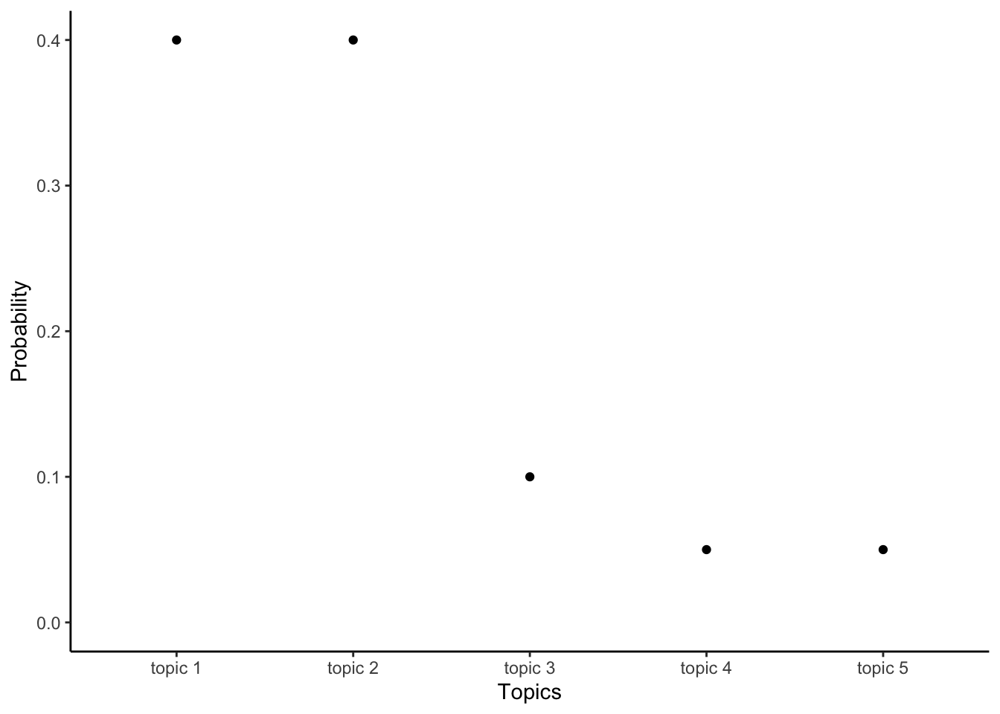
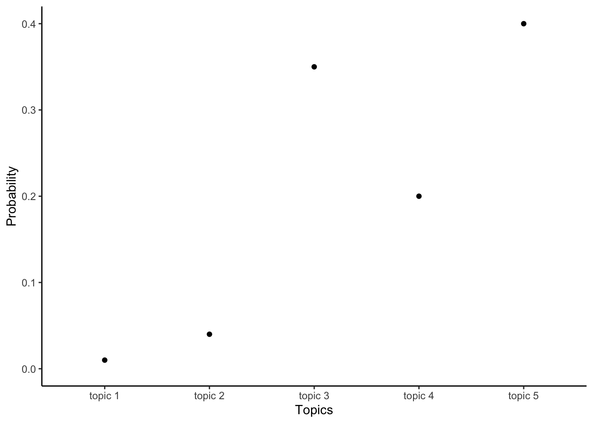
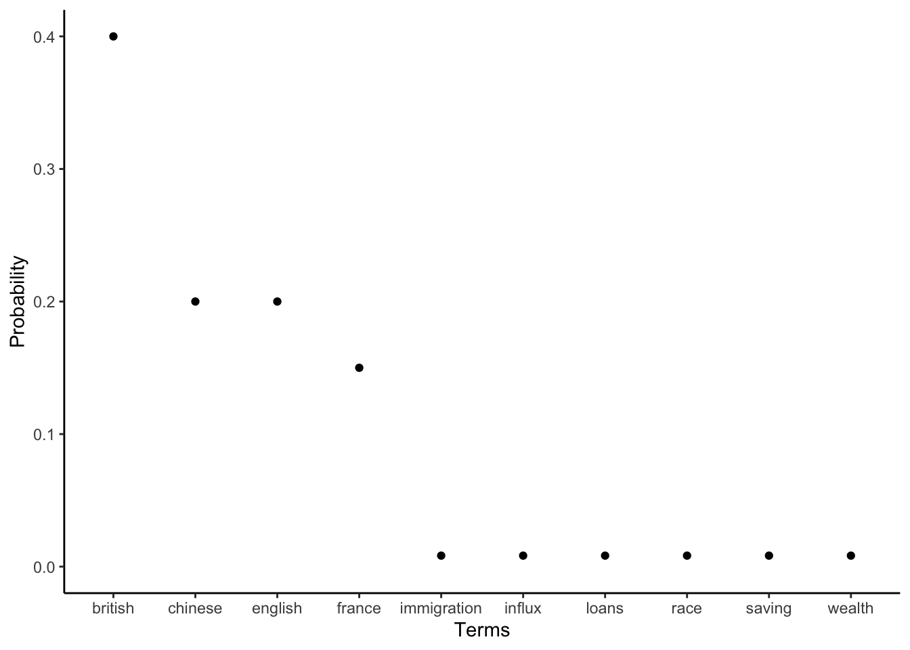
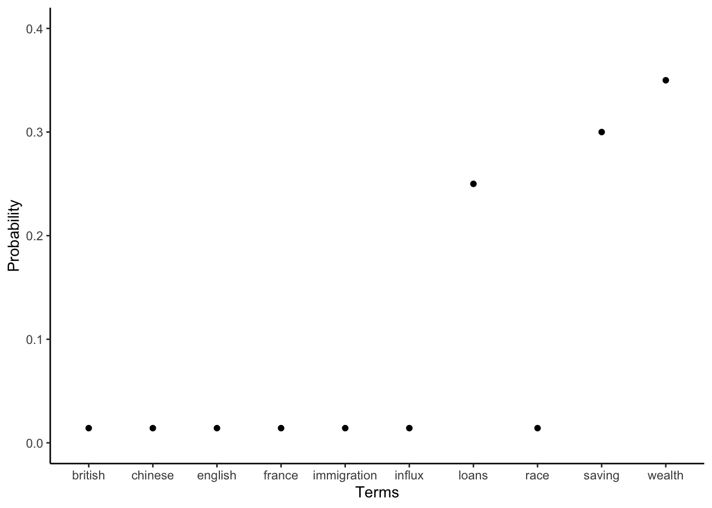

library(astrologer)
library(beepr)
library(fs)
library(gutenbergr)
library(quanteda)
library(stm)
library(tidytext)
library(tidyverse)16 Text as data
Prerequisites
- Read Text as data: An overview, (Benoit 2020)
- This chapter provides an overview of using text as data.
- Read Supervised Machine Learning for Text Analysis in R, (Hvitfeldt and Silge 2021)
- Focus on Chapters 6 “Regression”, and 7 “Classification”, which implements linear and generalized linear models using text as data.
- Read The Naked Truth: How the names of 6,816 complexion products can reveal bias in beauty, (Amaka and Thomas 2021)
- Analysis of text on make-up products.
Key concepts and skills
- Understanding text as a source of data that we can analyze enables many interesting questions to be considered.
- Text cleaning and preparation are especially critical because of the large number of possible outcomes. There are many decisions that need to be made at this stage, which have important effects later in the analysis.
- One way to consider a text dataset is to look at which words distinguish particular documents.
- Another is to consider which topics are contained in a document.
Software and packages
- Base R (R Core Team 2023)
astrologer(Gelfand 2022) (this package is not on CRAN, so install it with:devtools::install_github("sharlagelfand/astrologer"))beepr(Bååth 2018)fs(Hester, Wickham, and Csárdi 2021)gutenbergr(Johnston and Robinson 2022)quanteda(Benoit et al. 2018)stm(Roberts, Stewart, and Tingley 2019)tidytext(Silge and Robinson 2016)tidyverse(Wickham et al. 2019)
16.1 Introduction
Text is all around us. In many cases, text is the earliest type of data that we are exposed to. Increases in computational power, the development of new methods, and the enormous availability of text, mean that there has been a great deal of interest in using text as data. Using text as data provides opportunities for unique analyses. For instance:
- text analysis of state-run newspapers in African countries can identify manipulation by governments (Hassan 2022);
- the text from UK daily newspapers can be used to generate better forecasts of GDP and inflation (Kalamara et al. 2022), and similarly, The New York Times can be used to create an uncertainty index which correlates with US economic activity (Alexopoulos and Cohen 2015);
- the analysis of notes in Electronic Health Records (EHR) can improve the efficiency of disease prediction (Gronsbell et al. 2019); and
- analysis of US congressional records indicates just how often women legislators are interrupted by men (Miller and Sutherland 2022).
Earlier approaches to the analysis of text tend to convert words into numbers, divorced of context. They could then be analyzed using traditional approaches, such as variants of logistic regression. More recent methods try to take advantage of the structure inherent in text, which can bring additional meaning. The difference is perhaps like a child who can group similar colors, compared with a child who knows what objects are; although both crocodiles and trees are green, and you can do something with that knowledge, it is useful to know that a crocodile could eat you while a tree probably would not.
Text can be considered an unwieldy, yet similar, version of the datasets that we have used throughout this book. The main difference is that we will typically begin with wide data, where each variable is a word, or token more generally. Often each entry is then a count. We would then typically transform this into rather long data, with one variable of words and another of the counts. Considering text as data naturally requires some abstraction from its context. But this should not be entirely separated as this can perpetuate historical inequities. For instance, Koenecke et al. (2020) find that automated speech recognition systems perform much worse for Black compared with White speakers, and Davidson, Bhattacharya, and Weber (2019) find that tweets that use Black American English, which is a specifically defined technical term, are classified at hate speech at higher rates than similar tweets in Standard American English, which again is a technical term.
One exciting aspect of text data is that it is typically not generated for the purposes of our analysis. The trade-off is that we typically must do a bunch more work to get it into a form that we can work with. There are a lot of decisions to be made in the data cleaning and preparation stages.
The larger size of text datasets means that it is especially important to simulate, and start small, when it comes to their analysis. Using text as data is exciting because of the quantity and variety of text that is available to us. But in general, dealing with text datasets is messy. There is a lot of cleaning and preparation that is typically required. Often, text datasets are large. As such having a reproducible workflow in place and then clearly communicating your findings, becomes critical. Nonetheless, it is an exciting area.
In this chapter we first consider preparing text datasets. We then consider Term Frequency-Inverse Document Frequency (TF-IDF) and topic models.
16.2 Text cleaning and preparation
Text modeling is an exciting area of research. But, and this is true more generally, the cleaning and preparation aspect is often at least as difficult as the modeling. We will cover some essentials and provide a foundation that can be built on.
The first step is to get some data. We discussed data gathering in Chapter 7 and mentioned in passing many sources including:
- Using Inside Airbnb, which provides text from reviews.
- Project Gutenberg which provides the text from out-of-copyright books.
- Scraping Wikipedia or other websites.
The workhorse packages that we need for text cleaning and preparation are stringr, which is part of the tidyverse, and quanteda.
For illustrative purposes we construct a corpus of the first sentence or two, from three books: Beloved by Toni Morrison, The Last Samurai by Helen DeWitt, and Jane Eyre by Charlotte Brontë.
last_samurai <-"My father's father was a Methodist minister."
beloved <- "124 was spiteful. Full of Baby's venom."
jane_eyre <- "There was no possibility of taking a walk that day."
bookshelf <-
tibble(
book = c("Last Samurai", "Beloved", "Jane Eyre"),
first_sentence = c(last_samurai, beloved, jane_eyre)
)
bookshelf# A tibble: 3 × 2
book first_sentence
<chr> <chr>
1 Last Samurai My father's father was a Methodist minister.
2 Beloved 124 was spiteful. Full of Baby's venom.
3 Jane Eyre There was no possibility of taking a walk that day.We typically want to construct a document-feature matrix, which has documents in each observation, words in each column, and a count for each combination, along with associated metadata. For instance, if our corpus was the text from Airbnb reviews, then each document may be a review, and typical features could include: “The”, “Airbnb”, “was”, “great”. Notice here that the sentence has been split into different words. We typically talk of “tokens” to generalize away from words, because of the variety of aspects we may be interested in, but words are commonly used.
books_corpus <-
corpus(bookshelf,
docid_field = "book",
text_field = "first_sentence")
books_corpusCorpus consisting of 3 documents.
Last Samurai :
"My father's father was a Methodist minister."
Beloved :
"124 was spiteful. Full of Baby's venom."
Jane Eyre :
"There was no possibility of taking a walk that day."We use the tokens in the corpus to construct a document-feature matrix (DFM) using dfm() from quanteda (Benoit et al. 2018).
books_dfm <-
books_corpus |>
tokens() |>
dfm()
books_dfmDocument-feature matrix of: 3 documents, 21 features (57.14% sparse) and 0 docvars.
features
docs my father's father was a methodist minister . 124 spiteful
Last Samurai 1 1 1 1 1 1 1 1 0 0
Beloved 0 0 0 1 0 0 0 2 1 1
Jane Eyre 0 0 0 1 1 0 0 1 0 0
[ reached max_nfeat ... 11 more features ]We now consider some of the many decisions that need to be made as part of this process. There is no definitive right or wrong answer. Instead, we make those decisions based on what we will be using the dataset for.
16.2.1 Stop words
Stop words are words such as “the”, “and”, and “a”. For a long time stop words were not thought to convey much meaning, and there were concerns around memory-constrained computation. A common step of preparing a text dataset was to remove stop words. We now know that stop words can have a great deal of meaning (Schofield, Magnusson, and Mimno 2017). The decision to remove them is a nuanced one that depends on circumstances.
We can get a list of stop words using stopwords() from quanteda.
stopwords(source = "snowball")[1:10] [1] "i" "me" "my" "myself" "we" "our"
[7] "ours" "ourselves" "you" "your" We could then look for all instances of words in that list and crudely remove them with str_replace_all().
stop_word_list <-
paste(stopwords(source = "snowball"), collapse = " | ")
bookshelf |>
mutate(no_stops = str_replace_all(
string = first_sentence,
pattern = stop_word_list,
replacement = " ")
) |>
select(no_stops, first_sentence)# A tibble: 3 × 2
no_stops first_sentence
<chr> <chr>
1 My father's father a Methodist minister. My father's father was a Methodist m…
2 124 spiteful. Full Baby's venom. 124 was spiteful. Full of Baby's ven…
3 There no possibility taking walk day. There was no possibility of taking a…There are many different lists of stop words that have been put together by others. For instance, stopwords() can use lists including: “snowball”, “stopwords-iso”, “smart”, “marimo”, “ancient”, and “nltk”. More generally, if we decide to use stop words then we often need to augment such lists with project-specific words. We can do this by creating a count of individual words in the corpus, and then sorting by the most common and adding those to the stop words list as appropriate.
stop_word_list_updated <-
paste(
"Methodist |",
"spiteful |",
"possibility |",
stop_word_list,
collapse = " | "
)
bookshelf |>
mutate(no_stops = str_replace_all(
string = first_sentence,
pattern = stop_word_list_updated,
replacement = " ")
) |>
select(no_stops)# A tibble: 3 × 1
no_stops
<chr>
1 My father's father a minister.
2 124 spiteful. Full Baby's venom.
3 There no of taking walk day. We can integrate the removal of stop words into our construction of the DFM with dfm_remove() from quanteda.
books_dfm |>
dfm_remove(stopwords(source = "snowball"))Document-feature matrix of: 3 documents, 14 features (61.90% sparse) and 0 docvars.
features
docs father's father methodist minister . 124 spiteful full baby's
Last Samurai 1 1 1 1 1 0 0 0 0
Beloved 0 0 0 0 2 1 1 1 1
Jane Eyre 0 0 0 0 1 0 0 0 0
features
docs venom
Last Samurai 0
Beloved 1
Jane Eyre 0
[ reached max_nfeat ... 4 more features ]When we remove stop words we artificially adjust our dataset. Sometimes there may be a good reason to do that. But it must not be done unthinkingly. For instance, in Chapter 6 and Chapter 10 we discussed how sometimes datasets may need to be censored, truncated, or manipulated in other similar ways, to preserve the privacy of respondents. It is possible that the integration of the removal of stop words as a default step in natural language processing was due to computational power, which may have been more limited when these methods were developed. In any case, Jurafsky and Martin ([2000] 2023, 62) conclude that removing stop words does not improve performance for text classification. Relatedly, Schofield, Magnusson, and Mimno (2017) find that inference from topic models is not improved by the removal of anything other than the most frequent words. If stop words are to be removed, then they recommend doing this after topics are constructed.
16.2.2 Case, numbers, and punctuation
There are times when all we care about is the word, not the case or punctuation. For instance, if the text corpus was particularly messy or the existence of particular words was informative. We trade-off the loss of information for the benefit of making things simpler. We can convert to lower case with str_to_lower(), and use str_replace_all() to remove punctuation with “[:punct:]”, and numbers with “[:digit:]”.
bookshelf |>
mutate(lower_sentence = str_to_lower(string = first_sentence)) |>
select(lower_sentence)# A tibble: 3 × 1
lower_sentence
<chr>
1 my father's father was a methodist minister.
2 124 was spiteful. full of baby's venom.
3 there was no possibility of taking a walk that day.bookshelf |>
mutate(no_punctuation_numbers = str_replace_all(
string = first_sentence,
pattern = "[:punct:]|[:digit:]",
replacement = " "
)) |>
select(no_punctuation_numbers)# A tibble: 3 × 1
no_punctuation_numbers
<chr>
1 "My father s father was a Methodist minister "
2 " was spiteful Full of Baby s venom "
3 "There was no possibility of taking a walk that day "As an aside, we can remove letters, numbers, and punctuation with “[:graph:]” in str_replace_all(). While this is rarely needed in textbook examples, it is especially useful with real datasets, because they will typically have a small number of unexpected symbols that we need to identify and then remove. We use it to remove everything that we are used to, leaving only that which we are not.
More generally, we can use arguments in tokens() from quanteda() to do this.
books_corpus |>
tokens(remove_numbers = TRUE, remove_punct = TRUE)Tokens consisting of 3 documents.
Last Samurai :
[1] "My" "father's" "father" "was" "a" "Methodist"
[7] "minister"
Beloved :
[1] "was" "spiteful" "Full" "of" "Baby's" "venom"
Jane Eyre :
[1] "There" "was" "no" "possibility" "of"
[6] "taking" "a" "walk" "that" "day" 16.2.3 Typos and uncommon words
Then we need to decide what to do about typos and other minor issues. Every real-world text has typos. Sometimes these should clearly be fixed. But if they are made in a systematic way, for instance, a certain writer always makes the same mistakes, then they could have value if we were interested in grouping by the writer. The use of OCR will introduce common issues as well, as was seen in Chapter 7. For instance, “the” is commonly incorrectly recognized as “thc”.
We could fix typos in the same way that we fixed stop words, i.e. with lists of corrections. When it comes to uncommon words, we can build this into our document-feature matrix creation with dfm_trim(). For instance, we could use “min_termfreq = 2” to remove any word that does not occur at least twice, or “min_docfreq = 0.05” to remove any word that is not in at least five per cent of documents or “max_docfreq = 0.90” to remove any word that is in at least 90 per cent of documents.
books_corpus |>
tokens(remove_numbers = TRUE, remove_punct = TRUE) |>
dfm(tolower = TRUE) |>
dfm_trim(min_termfreq = 2)Document-feature matrix of: 3 documents, 3 features (22.22% sparse) and 0 docvars.
features
docs was a of
Last Samurai 1 1 0
Beloved 1 0 1
Jane Eyre 1 1 116.2.4 Tuples
A tuple is an ordered list of elements. In the context of text it is a series of words. If the tuple comprises two words, then we term this a “bi-gram”, three words is a “tri-gram”, etc. These are an issue when it comes to text cleaning and preparation because we often separate terms based on a space. This would result in an inappropriate separation.
This is a clear issue when it comes to place names. For instance, consider “British Columbia”, “New Hampshire”, “United Kingdom”, and “Port Hedland”. One way forward is to create a list of such places and then use str_replace_all() to add an underscore, for instance, “British_Columbia”, “New_Hampshire”, “United_Kingdom”, and “Port_Hedland”. Another option is to use tokens_compound() from quanteda.
some_places <- c("British Columbia",
"New Hampshire",
"United Kingdom",
"Port Hedland")
a_sentence <-
c("Vancouver is in British Columbia and New Hampshire is not")
tokens(a_sentence) |>
tokens_compound(pattern = phrase(some_places))Tokens consisting of 1 document.
text1 :
[1] "Vancouver" "is" "in" "British_Columbia"
[5] "and" "New_Hampshire" "is" "not" In that case, we knew what the tuples were. But it might be that we were not sure what the common tuples were in the corpus. We could use tokens_ngrams() to identify them. We could ask for, say, all bi-grams in an excerpt from Jane Eyre. We showed how to download the text of this book from Project Gutenberg in Chapter 13 and so here we load the local version that we saved earlier.
jane_eyre <- read_csv(
"jane_eyre.csv",
col_types = cols(
gutenberg_id = col_integer(),
text = col_character()
)
)
jane_eyre# A tibble: 21,001 × 2
gutenberg_id text
<int> <chr>
1 1260 JANE EYRE
2 1260 AN AUTOBIOGRAPHY
3 1260 <NA>
4 1260 by Charlotte Brontë
5 1260 <NA>
6 1260 _ILLUSTRATED BY F. H. TOWNSEND_
7 1260 <NA>
8 1260 London
9 1260 SERVICE & PATON
10 1260 5 HENRIETTA STREET
# ℹ 20,991 more rowsAs there are many blank lines we will remove them.
jane_eyre <-
jane_eyre |>
filter(!is.na(text))jane_eyre_text <- tibble(
book = "Jane Eyre",
text = paste(jane_eyre$text, collapse = " ") |>
str_replace_all(pattern = "[:punct:]",
replacement = " ") |>
str_replace_all(pattern = stop_word_list,
replacement = " ")
)
jane_eyre_corpus <-
corpus(jane_eyre_text, docid_field = "book", text_field = "text")
ngrams <- tokens_ngrams(tokens(jane_eyre_corpus), n = 2)
ngram_counts <-
tibble(ngrams = unlist(ngrams)) |>
count(ngrams, sort = TRUE)
head(ngram_counts)# A tibble: 6 × 2
ngrams n
<chr> <int>
1 I_not 344
2 Mr_Rochester 332
3 I_thought 136
4 St_John 132
5 don_t 126
6 I_saw 122Having identified some common bi-grams, we could add them to the list to be changed. This example includes names like “Mr Rochester” and “St John” which would need to remain together for analysis.
16.2.5 Stemming and lemmatizing
Stemming and lemmatizing words is another common approach for reducing the dimensionality of a text dataset. Stemming means to remove the last part of the word, in the expectation that this will result in more general words. For instance, “Canadians”, “Canadian”, and “Canada” all stem to “Canad”. Lemmatizing is similar, but is more involved. It means changing words, not just on their spelling, but on their canonical form (Grimmer, Roberts, and Stewart 2022, 54). For instance, “Canadians”, “Canadian”, “Canucks”, and “Canuck” may all be changed to “Canada”.
We can do this with dfm_wordstem(). We notice, that, say, “minister”, has been changed to “minist”.
char_wordstem(c("Canadians", "Canadian", "Canada"))[1] "Canadian" "Canadian" "Canada" books_corpus |>
tokens(remove_numbers = TRUE, remove_punct = TRUE) |>
dfm(tolower = TRUE) |>
dfm_wordstem()Document-feature matrix of: 3 documents, 18 features (59.26% sparse) and 0 docvars.
features
docs my father was a methodist minist spite full of babi
Last Samurai 1 2 1 1 1 1 0 0 0 0
Beloved 0 0 1 0 0 0 1 1 1 1
Jane Eyre 0 0 1 1 0 0 0 0 1 0
[ reached max_nfeat ... 8 more features ]While this is a common step in using text as data, Schofield et al. (2017) find that in the context of topic modeling, which we cover later, stemming has little effect and there is little need to do it.
16.2.6 Duplication
Duplication is a major concern with text datasets because of their size. For instance, Bandy and Vincent (2021) showed that around 30 per cent of the data were inappropriately duplicated in the BookCorpus dataset, and Schofield, Thompson, and Mimno (2017) show that this is a major concern and could substantially affect results. However, it can be a subtle and difficult to diagnose problem. For instance, in Chapter 13 when we considered counts of page numbers for various authors in the context of Poisson regression, we could easily have accidentally included each Shakespeare entry twice because not only are there entries for each play, but also many anthologies that contained all of them. Careful consideration of our dataset identified the issue, but that would be difficult at scale.
16.3 Term Frequency-Inverse Document Frequency (TF-IDF)
16.3.1 Distinguishing horoscopes
Install and load astrologer, which is a dataset of horoscopes to explore a real dataset.
We can then access the “horoscopes” dataset.
horoscopes# A tibble: 1,272 × 4
startdate zodiacsign horoscope url
<date> <fct> <chr> <chr>
1 2015-01-05 Aries Considering the fact that this past week (espec… http…
2 2015-01-05 Taurus It's time Taurus. You aren't one to be rushed a… http…
3 2015-01-05 Gemini Soon it will be time to review what you know, t… http…
4 2015-01-05 Cancer Feeling feelings and being full of flavorful s… http…
5 2015-01-05 Leo Look, listen, watch, meditate and engage in pra… http…
6 2015-01-05 Virgo Last week's astrology is still reverberating th… http…
7 2015-01-05 Libra Get out your markers and your glue sticks. Get … http…
8 2015-01-05 Scorpio Time to pay extra attention to the needs of you… http…
9 2015-01-05 Sagittarius Everything right now is about how you say it, h… http…
10 2015-01-05 Capricorn The full moon on January 4th/5th was a healthy … http…
# ℹ 1,262 more rowsThere are four variables: “startdate”, “zodiacsign”, “horoscope”, and “url” (note that URL is out-of-date because the website has been updated, for instance, the first one refers to here). We are interested in the words that are used to distinguish the horoscope of each zodiac sign.
horoscopes |>
count(zodiacsign)# A tibble: 12 × 2
zodiacsign n
<fct> <int>
1 Aries 106
2 Taurus 106
3 Gemini 106
4 Cancer 106
5 Leo 106
6 Virgo 106
7 Libra 106
8 Scorpio 106
9 Sagittarius 106
10 Capricorn 106
11 Aquarius 106
12 Pisces 106There are 106 horoscopes for each zodiac sign. In this example we first tokenize by word, and then create counts based on zodiac sign only, not date. We use tidytext because it is used extensively in Hvitfeldt and Silge (2021).
horoscopes_by_word <-
horoscopes |>
select(-startdate,-url) |>
unnest_tokens(output = word,
input = horoscope,
token = "words")
horoscopes_counts_by_word <-
horoscopes_by_word |>
count(zodiacsign, word, sort = TRUE)
horoscopes_counts_by_word# A tibble: 41,850 × 3
zodiacsign word n
<fct> <chr> <int>
1 Cancer to 1440
2 Sagittarius to 1377
3 Aquarius to 1357
4 Aries to 1335
5 Pisces to 1313
6 Leo to 1302
7 Libra to 1270
8 Sagittarius you 1264
9 Virgo to 1262
10 Scorpio to 1260
# ℹ 41,840 more rowsWe can see that the most popular words appear to be similar for the different zodiacs. At this point, we could use the data in a variety of ways.
We might be interested to know which words characterize each group—that is to say, which words are commonly used only in each group. We can do that by first looking at a word’s term frequency (TF), which is how many times a word is used in the horoscopes for each zodiac sign. The issue is that there are a lot of words that are commonly used regardless of context. As such, we may also like to look at the inverse document frequency (IDF) in which we “penalize” words that occur in the horoscopes for many zodiac signs. A word that occurs in the horoscopes of many zodiac signs would have a lower IDF than a word that only occurs in the horoscopes of one. The term frequency–inverse document frequency (tf-idf) is then the product of these.
We can create this value using bind_tf_idf() from tidytext. It will create new variables for each of these measures.
horoscopes_counts_by_word_tf_idf <-
horoscopes_counts_by_word |>
bind_tf_idf(
term = word,
document = zodiacsign,
n = n
) |>
arrange(-tf_idf)
horoscopes_counts_by_word_tf_idf# A tibble: 41,850 × 6
zodiacsign word n tf idf tf_idf
<fct> <chr> <int> <dbl> <dbl> <dbl>
1 Capricorn goat 6 0.000236 2.48 0.000585
2 Pisces pisces 14 0.000531 1.10 0.000584
3 Sagittarius sagittarius 10 0.000357 1.39 0.000495
4 Cancer cancer 10 0.000348 1.39 0.000483
5 Gemini gemini 7 0.000263 1.79 0.000472
6 Taurus bulls 5 0.000188 2.48 0.000467
7 Aries warns 5 0.000186 2.48 0.000463
8 Cancer organize 7 0.000244 1.79 0.000437
9 Cancer overwork 5 0.000174 2.48 0.000433
10 Taurus let's 10 0.000376 1.10 0.000413
# ℹ 41,840 more rowsIn Table 16.1 we look at the words that distinguish the horoscopes of each zodiac sign. The first thing to notice is that some of them have their own zodiac sign. On the one hand, there is an argument for removing this, but on the other hand, the fact that it does not happen for all of them is perhaps informative of the nature of the horoscopes for each sign.
horoscopes_counts_by_word_tf_idf |>
slice(1:5,
.by = zodiacsign) |>
select(zodiacsign, word) |>
summarise(all = paste0(word, collapse = "; "),
.by = zodiacsign) |>
knitr::kable(col.names = c("Zodiac sign",
"Most common words unique to that sign"))| Zodiac sign | Most common words unique to that sign |
|---|---|
| Capricorn | goat; capricorn; capricorns; signify; neighborhood |
| Pisces | pisces; wasted; missteps; node; shoes |
| Sagittarius | sagittarius; rolodex; distorted; coat; reinvest |
| Cancer | cancer; organize; overwork; procrastinate; scuttle |
| Gemini | gemini; mood; output; admit; faces |
| Taurus | bulls; let’s; painfully; virgin; taurus |
| Aries | warns; vesta; aries; fearful; chase |
| Virgo | digesting; trace; liberate; someone’s; final |
| Libra | proof; inevitably; recognizable; reference; disguise |
| Scorpio | skate; advocate; knots; bottle; meditating |
| Aquarius | saves; consult; yearnings; sexy; athene |
| Leo | trines; blessed; regrets; leo; agree |
16.4 Topic models
Topic models are useful when we have many statements and we want to create groups based on which sentences that use similar words. We consider those groups of similar words to define topics. One way to get consistent estimates of the topics of each statement is to use topic models. While there are many variants, one way is to use the latent Dirichlet allocation (LDA) method of Blei, Ng, and Jordan (2003), as implemented by stm. For clarity, in the context of this chapter, LDA refers to latent Dirichlet allocation and not Linear Discriminant Analysis, although this is another common subject associated with the acronym LDA.
The key assumption behind the LDA method is that for each statement, a document, is made by a person who decides the topics they would like to talk about in that document, and who then chooses words, terms, that are appropriate to those topics. A topic could be thought of as a collection of terms, and a document as a collection of topics. The topics are not specified ex ante; they are an outcome of the method. Terms are not necessarily unique to a particular topic, and a document could be about more than one topic. This provides more flexibility than other approaches such as a strict word count method. The goal is to have the words found in documents group themselves to define topics.
LDA considers each statement to be a result of a process where a person first chooses the topics they want to speak about. After choosing the topics, the person then chooses appropriate words to use for each of those topics. More generally, the LDA topic model works by considering each document as having been generated by some probability distribution over topics. For instance, if there were five topics and two documents, then the first document may be comprised mostly of the first few topics; the other document may be mostly about the final few topics (Figure 16.1).


Similarly, each topic could be considered a probability distribution over terms. To choose the terms used in each document the speaker picks terms from each topic in the appropriate proportion. For instance, if there were ten terms, then one topic could be defined by giving more weight to terms related to immigration; and some other topic may give more weight to terms related to the economy (Figure 16.2).


By way of background, the Dirichlet distribution is a variation of the beta distribution that is commonly used as a prior for categorical and multinomial variables. If there are just two categories, then the Dirichlet and the beta distributions are the same. In the special case of a symmetric Dirichlet distribution, \(\eta=1\), it is equivalent to a uniform distribution. If \(\eta<1\), then the distribution is sparse and concentrated on a smaller number of the values, and this number decreases as \(\eta\) decreases. A hyperparameter, in this usage, is a parameter of a prior distribution.
After the documents are created, they are all that we can analyze. The term usage in each document is observed, but the topics are hidden, or “latent”. We do not know the topics of each document, nor how terms defined the topics. That is, we do not know the probability distributions of Figure 16.1 or Figure 16.2. In a sense we are trying to reverse the document generation process—we have the terms, and we would like to discover the topics.
If we observe the terms in each document, then we can obtain estimates of the topics (Steyvers and Griffiths 2006). The outcomes of the LDA process are probability distributions. It is these distributions that define the topics. Each term will be given a probability of being a member of a particular topic, and each document will be given a probability of being about a particular topic.
The initial practical step when implementing LDA given a corpus of documents is usually to remove stop words. Although, as mentioned earlier, this is not necessary, and may be better done after the groups are created. We often also remove punctuation and capitalization. We then construct our document-feature matrix using dfm() from quanteda.
After the dataset is ready, stm can be used to implement LDA and approximate the posterior. The process attempts to find a topic for a particular term in a particular document, given the topics of all other terms for all other documents. Broadly, it does this by first assigning every term in every document to a random topic, specified by Dirichlet priors. It then selects a particular term in a particular document and assigns it to a new topic based on the conditional distribution where the topics for all other terms in all documents are taken as given (Grün and Hornik 2011, 6). Once this has been estimated, then estimates for the distribution of words into topics and topics into documents can be backed out.
The conditional distribution assigns topics depending on how often a term has been assigned to that topic previously, and how common the topic is in that document (Steyvers and Griffiths 2006). The initial random allocation of topics means that the results of early passes through the corpus of document are poor, but given enough time the algorithm converges to an appropriate estimate.
The choice of the number of topics, \(k\), affects the results, and must be specified a priori. If there is a strong reason for a particular number, then this can be used. Otherwise, one way to choose an appropriate number is to use a test and training set process. Essentially, this means running the process on a variety of possible values for k and then picking an appropriate value that performs well.
One weakness of the LDA method is that it considers a “bag of words” where the order of those words does not matter (Blei 2012). It is possible to extend the model to reduce the impact of the bag-of-words assumption and add conditionality to word order. Additionally, alternatives to the Dirichlet distribution can be used to extend the model to allow for correlation.
16.4.1 What is talked about in the Canadian parliament?
Following the example of the British, the written record of what is said in the Canadian parliament is called “Hansard”. It is not completely verbatim, but is very close. It is available in CSV format from LiPaD, which was constructed by Beelen et al. (2017).
We are interested in what was talked about in the Canadian parliament in 2018. To get started we can download the entire corpus from here, and then discard all of the years apart from 2018. If the datasets are in a folder called “2018”, we can use read_csv() to read and combine all the CSVs.
files_of_interest <-
dir_ls(path = "2018/", glob = "*.csv", recurse = 2)
hansard_canada_2018 <-
read_csv(
files_of_interest,
col_types = cols(
basepk = col_integer(),
speechdate = col_date(),
speechtext = col_character(),
speakerparty = col_character(),
speakerriding = col_character(),
speakername = col_character()
),
col_select =
c(basepk, speechdate, speechtext, speakername, speakerparty,
speakerriding)) |>
filter(!is.na(speakername))
hansard_canada_2018# A tibble: 33,105 × 6
basepk speechdate speechtext speakername speakerparty speakerriding
<int> <date> <chr> <chr> <chr> <chr>
1 4732776 2018-01-29 "Mr. Speaker, I wo… Julie Dabr… Liberal Toronto—Danf…
2 4732777 2018-01-29 "Mr. Speaker, I wa… Matthew Du… New Democra… Beloeil—Cham…
3 4732778 2018-01-29 "Mr. Speaker, I am… Stephanie … Conservative Calgary Midn…
4 4732779 2018-01-29 "Resuming debate.\… Anthony Ro… Liberal Nipissing—Ti…
5 4732780 2018-01-29 "Mr. Speaker, we a… Alain Rayes Conservative Richmond—Art…
6 4732781 2018-01-29 "The question is o… Anthony Ro… Liberal Nipissing—Ti…
7 4732782 2018-01-29 "Agreed.\n No." Some hon. … <NA> <NA>
8 4732783 2018-01-29 "All those in favo… Anthony Ro… Liberal Nipissing—Ti…
9 4732784 2018-01-29 "Yea." Some hon. … <NA> <NA>
10 4732785 2018-01-29 "All those opposed… Anthony Ro… Liberal Nipissing—Ti…
# ℹ 33,095 more rowsThe use of filter() at the end is needed because sometimes aspects such as “directions” and similar non-speech aspects are included in the Hansard. For instance, if we do not include that filter() then the first line is “The House resumed from November 9, 2017, consideration of the motion.” We can then construct a corpus.
hansard_canada_2018_corpus <-
corpus(hansard_canada_2018,
docid_field = "basepk",
text_field = "speechtext")Warning: NA is replaced by empty stringhansard_canada_2018_corpusCorpus consisting of 33,105 documents and 4 docvars.
4732776 :
"Mr. Speaker, I would like to wish everyone in this place a h..."
4732777 :
"Mr. Speaker, I want to thank my colleague from Richmond—Arth..."
4732778 :
"Mr. Speaker, I am here today to discuss a motion that asks t..."
4732779 :
"Resuming debate. There being no further debate, the hon. mem..."
4732780 :
"Mr. Speaker, we are nearing the end of the discussion and de..."
4732781 :
"The question is on the motion. Is the pleasure of the House ..."
[ reached max_ndoc ... 33,099 more documents ]We use the tokens in the corpus to construct a document-feature matrix. To make our life a little easier, computationally, we remove any word that does not occur at least twice, and any word that does not occur in at least two documents.
hansard_dfm <-
hansard_canada_2018_corpus |>
tokens(
remove_punct = TRUE,
remove_symbols = TRUE
) |>
dfm() |>
dfm_trim(min_termfreq = 2, min_docfreq = 2) |>
dfm_remove(stopwords(source = "snowball"))
hansard_dfmDocument-feature matrix of: 33,105 documents, 29,595 features (99.77% sparse) and 4 docvars.
features
docs mr speaker like wish everyone place happy new year great
4732776 1 1 2 1 1 4 2 3 5 1
4732777 1 1 5 0 1 1 0 0 0 1
4732778 1 1 2 0 0 1 0 0 4 1
4732779 0 0 0 0 0 0 0 0 0 0
4732780 1 1 4 0 1 1 0 0 2 0
4732781 0 0 0 0 0 0 0 0 0 0
[ reached max_ndoc ... 33,099 more documents, reached max_nfeat ... 29,585 more features ]At this point we can use stm() from stm to implement a LDA model. We need to specify a document-feature matrix and the number of topics. Topic models are essentially just summaries. Instead of a document becoming a collection of words, they become a collection of topics with some probability associated with each topic. But because it is just providing a collection of words that tend to be used at similar times, rather than actual underlying meaning, we need to specify the number of topics that we are interested in. This decision will have a big impact, and we should consider a few different numbers.
hansard_topics <- stm(documents = hansard_dfm, K = 10)
beepr::beep()
write_rds(
hansard_topics,
file = "hansard_topics.rda"
)This will take some time, likely 15-30 minutes, so it is useful to save the model when it is done using write_rds(), and use beep to get a notification when it is done. We could then read the results back in with read_rds().
hansard_topics <- read_rds(
file = "hansard_topics.rda"
)We can look at the words in each topic with labelTopics().
labelTopics(hansard_topics)Topic 1 Top Words:
Highest Prob: indigenous, government, communities, bill, first, development, nations
FREX: fisheries, fish, oceans, marine, habitat, coastal, plastic
Lift: 10-knot, 13-storey, 167.4, 1885, 2,560, 200-mile, 2016-19
Score: indigenous, fisheries, oceans, fish, marine, environmental, peoples
Topic 2 Top Words:
Highest Prob: community, people, canada, mr, housing, speaker, many
FREX: latin, celebrate, filipino, sikh, anniversary, cancer, celebrating
Lift: #myfeminism, 1897, 1904, 1915, 1925, 1941, 1943
Score: latin, housing, filipino, sikh, celebrate, heritage, enverga
Topic 3 Top Words:
Highest Prob: bill, justice, system, criminal, victims, court, violence
FREX: justice, criminal, crime, firearms, offences, c-75, gun
Lift: 1608, 2,465, 202, 273, 273.1, 3.01, 302-page
Score: criminal, justice, c-75, firearms, offences, correctional, crime
Topic 4 Top Words:
Highest Prob: carbon, energy, pipeline, climate, government, oil, canada
FREX: carbon, emissions, pipelines, greenhouse, pricing, fuel, fossil
Lift: emitters, ipcc, pricing, -30, 0822, 1.3-billion, 1.62
Score: carbon, pipeline, oil, energy, emissions, climate, pollution
Topic 5 Top Words:
Highest Prob: canada, government, canadians, workers, canadian, new, tax
FREX: tariffs, steel, postal, cptpp, cra, nafta, aluminum
Lift: ip, wages, 0.6, 0.9, 1,090, 1.26-billion, 1.84
Score: tax, workers, economy, cptpp, tariffs, postal, growth
Topic 6 Top Words:
Highest Prob: member, speaker, mr, minister, house, hon, question
FREX: ethics, yea, resuming, hon, briefing, fundraisers, secretary
Lift: khan, norman, 1,525, 100-plus, 13.1, 1316, 13198
Score: hon, member, prime, question, ethics, nay, minister
Topic 7 Top Words:
Highest Prob: government, minister, liberals, liberal, prime, canadians, veterans
FREX: deficit, deficits, phoenix, veterans, promises, promised, davie
Lift: 0.23, 12.50, 14-billion, 148.6, 20-billion, 2045, 2051
Score: liberals, veterans, prime, tax, liberal, budget, deficit
Topic 8 Top Words:
Highest Prob: canada, motion, government, rights, mr, house, speaker
FREX: petition, refugees, pursuant, asylum, refugee, iran, israel
Lift: cfia, pre-clearance, terror, c-350, consular, crossers, deferred
Score: iran, immigration, pursuant, asylum, refugees, petition, petitioners
Topic 9 Top Words:
Highest Prob: bill, committee, act, legislation, canadians, canada, information
FREX: amendment, harassment, organ, cannabis, tobacco, c-59, c-65
Lift: 240.1, a36, anti-tobacco, appropriations, beadonor.ca, calibrated, carvin
Score: bill, amendments, elections, harassment, organ, amendment, c-76
Topic 10 Top Words:
Highest Prob: people, one, can, want, us, get, going
FREX: things, think, lot, something, see, really, look
Lift: 22-year-old, 980,000, backtracking, balloting, carolina, disenfranchise, enfranchisement
Score: people, going, forward, legislation, things, voter, think 16.5 Exercises
Scales
- (Plan) Consider the following scenario: You run a news website and are trying to understand whether to allow anonymous comments. You decide to do a A/B test, where we keep everything the same, but only allow anonymous comments on one version of the site. All you will have to decide is the text data that you obtain from the test. Please sketch out what that dataset could look like and then sketch a graph that you could build to show all observations.
- (Simulate) Please further consider the scenario described and simulate the situation. Please include at least ten tests based on the simulated data.
- (Acquire) Please describe one possible source of such a dataset.
- (Explore) Please use
ggplot2to build the graph that you sketched. Userstanarmto build a model. - (Communicate) Please write two paragraphs about what you did.
Questions
- Which argument to
str_replace_all()would remove punctuation?- “[:punct:]”
- “[:digit:]”
- “[:alpha:]”
- “[:lower:]”
- Change
stopwords(source = "snowball")[1:10]to find the ninth stopword in the “nltk” list.- “her”
- “my”
- “you”
- “i”
- Which function from quanteda() will tokenize a corpus?
tokenizer()token()tokenize()tokens()
- Which argument to
dfm_trim()should be used if we want to only include terms that occur at least twice? = 2)- “min_wordfreq”
- “min_termfreq”
- “min_term_occur”
- “min_ occurrence”
- What is your favorite example of a tri-gram?
- What is the second-most common word used in the zodiac signs for Cancer?
- to
- your
- the
- you
- What is the sixth-most common word used in the zodiac signs for Pisces, that is unique to that sign?
- shoes
- prayer
- fishes
- pisces
- Re-run the Canadian topic model, but only including five topics. Looking at the words in each topic, how would you describe what each of them is about?
Tutorial
Please follow the code of Hvitfeldt and Silge (2021) in Supervised Machine Learning for Text Analysis in R, Chapter 5.2 “Understand word embeddings by finding them yourself”, freely available here, to implement your own word embeddings for one year’s worth of data from LiPaD.